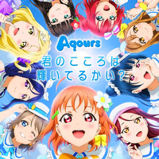
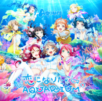
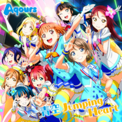
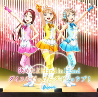
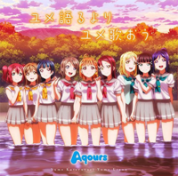
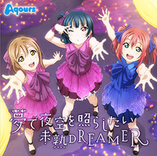

Love Live! Sunshine!! (ラブライブ! サンシャイン!! Rabu raibu! Sanshain!!) es un proyecto multimedia japonés co-desarrollado por el estudio de animación Sunrise, el sello discográfico Lantis y la revista Dengeki G's Magazine de ASCII Media Works. Es el segundo proyecto de la franquicia Love Live!, y comenzó oficialmente el 30 de abril de 2015 cuando sus personajes principales fueron anunciados.
Love Live! Sunshine!! fue anunciado por primera vez el 26 de febrero de 2015 en Dengeki G's Magazine, con una imagen de la entonces desconocida Chika Takami. El 30 de abril del mismo año, se dieron a conocer los personajes, la historia y varias imágenes del proyecto, mientras que en junio tras una votación de los fans, fue escogido el nombre Aqours para el grupo de idols. "Aqours" sería una combinación de la palabra "aqua" (agua, debido a que la historia transcurre en una ciudad costera) y "ours" (nuestro, en inglés).
“ La preparatoria femenina Uranohoshi, una escuela privada en el barrio costero de Uchiura en la ciudad de Numazu, en la prefectura de Shizuoka. Una pequeña escuela secundaria en un rincón de la bahía de Suruga, es el hogar de nueve adolescentes, lideradas por la estudiante de segundo año Chika Takami, impulsadas por un gran sueño: ¡Convertirse en la siguiente generación de brillantes y deslumbrantes "school idols"! Mientras no nos rindamos, cualquier sueño puede realizarse... ¡Todo lo que tenemos que hacer es esforzarnos por la fama y gloria! ¡Ahora su "School Idol Project" da comienzo para hacer sus sueños realidad! ”.
| Año | Carátula | Detalles |
|---|---|---|
| 2015 |  | Kimi no Kokoro wa Kagayaiteru kai?Lista de canciones:
|
| 2016 |  | Koi ni Naritai AQUARIUMLista de canciones:
|
| 2016 |  | Aozora Jumping HeartLista de canciones:
|
| 2016 |  | Kimeta yo Hand in HandLista de canciones:
|
| 2016 |  | Yume Kataruyori Yume UtaouLista de canciones:
|
| 2016 |  | Yume de Yozora o TerashitaiLista de canciones:
|
La serialización del manga Love Live! School idol project Sunshine!! comenzó en la edición de mayo de 2016 de la Dengeki G's Magazine (publicada en abril). La historia es obra de Sakurako Kimino y el diseño de personajes de Yuuhei Murota. La ilustración del manga está a cargo de Masaru Oda.